0. Multiple-case preprocessing & analysis
The visualizations below assume a completed multiple-case analysis. First run:
HARMONIC_ANALYSIS(filepath = "../HARMONIC_DIFF/HARMONIC/",
type = "standard",
full_condition = c("DAY0","DAY4","DAY7","DAY10","DAY14","DAY21"),
number_of_rep = c(3, 3, 3, 6, 3, 3),
DEG_list_name = "input_DEG_list.txt",
mango_design = c("DAY4_DAY0_UP","DAY7_DAY4_UP","DAY10_DAY7_UP","DAY14_DAY10_UP","DAY21_DAY14_UP"),
core = 5,
ref_genome = "mm",
PASSED_RATIO = 15,
PASSED_NUM = 2,
similarity = 90,
FC = 2,
condition = c(1,4),
dynamic_analyisis = "T",
preprocessing = "F")1. Heatmap
HARMONIC_HeatMap() visualizes active trees across
multiple conditions as a grid. Each row is an active tree and each
column is a condition (comparison); a filled cell indicates the tree was
detected in that condition, revealing common versus condition-specific
patterns. Key parameters:
-
filepath— path to the multiple-case analysis output directory -
DEG_list_name— file name of the input DEG list -
trends— direction of change to plot ("UP"or"DOWN") -
condition— which trees to show:"ALL"(all active trees) or"SIG"(significant trees only) -
width,height— output figure size (in inches) -
max— upper limit of the color scale -
dynamic_analyisis— whether to restrict to dynamic-analysis trees ("T"/"F")
1.1 All trees (condition = "ALL")
HARMONIC_HeatMap(filepath = "/data3/psg/NGS_2026/gitHARMONIC/HARMONIC_DIFF/HARMONIC_ALL/",
DEG_list_name = "input_DEG_list.txt",
trends = "UP",
condition = "ALL",
width = 5,
height = 10,
max = 10,
dynamic_analyisis = "F")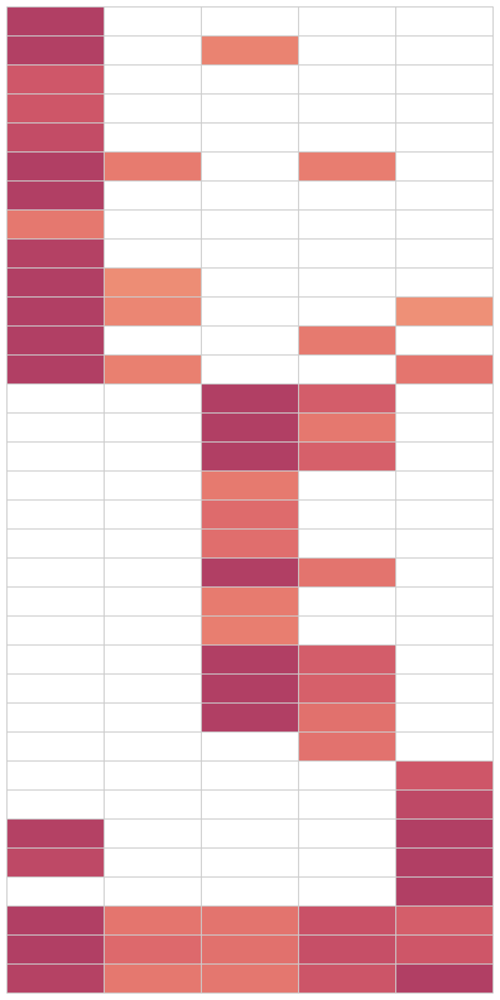
1.2 Significant trees only (condition = "SIG")
HARMONIC_HeatMap(filepath = "../HARMONIC_DIFF/HARMONIC/",
DEG_list_name = "input_DEG_list.txt",
trends = "UP",
condition = "SIG",
width = 5,
height = 10,
max = 10,
dynamic_analyisis = "F")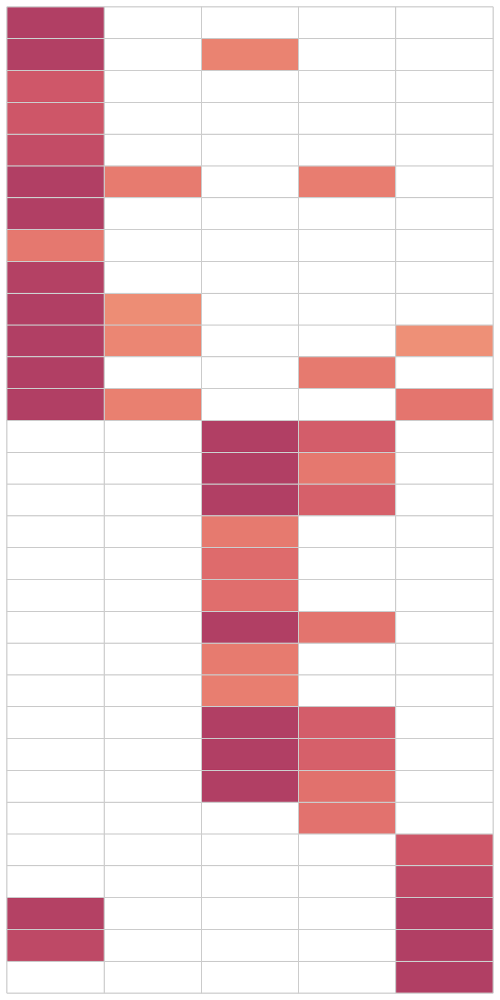
1.3 Dynamic-analysis trees
(dynamic_analyisis = "T")
Enabling dynamic_analyisis restricts the heatmap to
trees that are commonly detected across the specified range of
conditions, highlighting processes that are consistently active along
the trajectory. Note the much smaller number of rows compared to the
full heatmap above.
HARMONIC_HeatMap(filepath = "../HARMONIC_DIFF/HARMONIC/",
DEG_list_name = "input_DEG_list.txt",
trends = "UP",
condition = "ALL",
width = 5,
height = 3,
max = 10,
dynamic_analyisis = "T")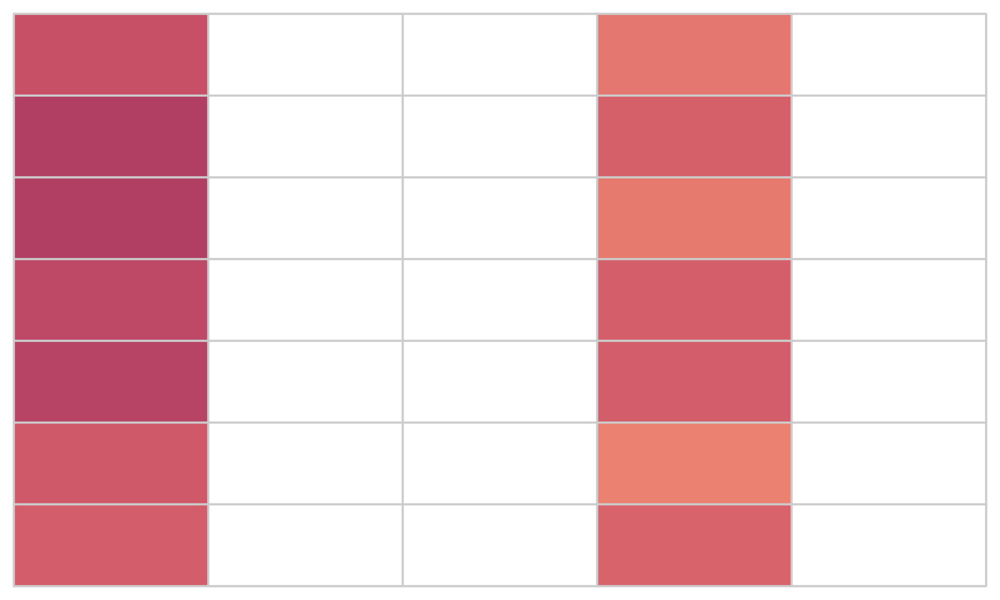
2. Specific-case analysis
2.1. Tree plot
HARMONIC_TREE_cirPLOT_forMULTI() shows the active trees
of a multiple-case analysis in a circular layout, where each wedge is a
tree and the concentric rings represent the successive conditions
(e.g. DAY4 → DAY21). This reveals how each tree’s signal changes across
the trajectory. Key parameters:
-
filepath— path to the multiple-case analysis output directory -
DEG_list_name— file name of the input DEG list -
status— which trees to show ("specific"for condition-specific trees) -
trends— direction of change ("UP"or"DOWN") -
LABEL— condition labels, in order -
project— project name shown at the plot center -
condition— reference condition index -
tree_size,label_size,project_size— font/element sizes -
width,height— output figure size (in inches)
HARMONIC_TREE_cirPLOT_forMULTI(filepath = "../HARMONIC_DIFF/HARMONIC/",
DEG_list_name = "input_DEG_list.txt",
status = "specific",
trends = "UP",
LABEL = c("DAY4","DAY7","DAY10","DAY14","DAY21"),
project = "Differentiation",
condition = 1,
tree_size = 7,
label_size = 3,
project_size = 10,
width = 14,
height = 12)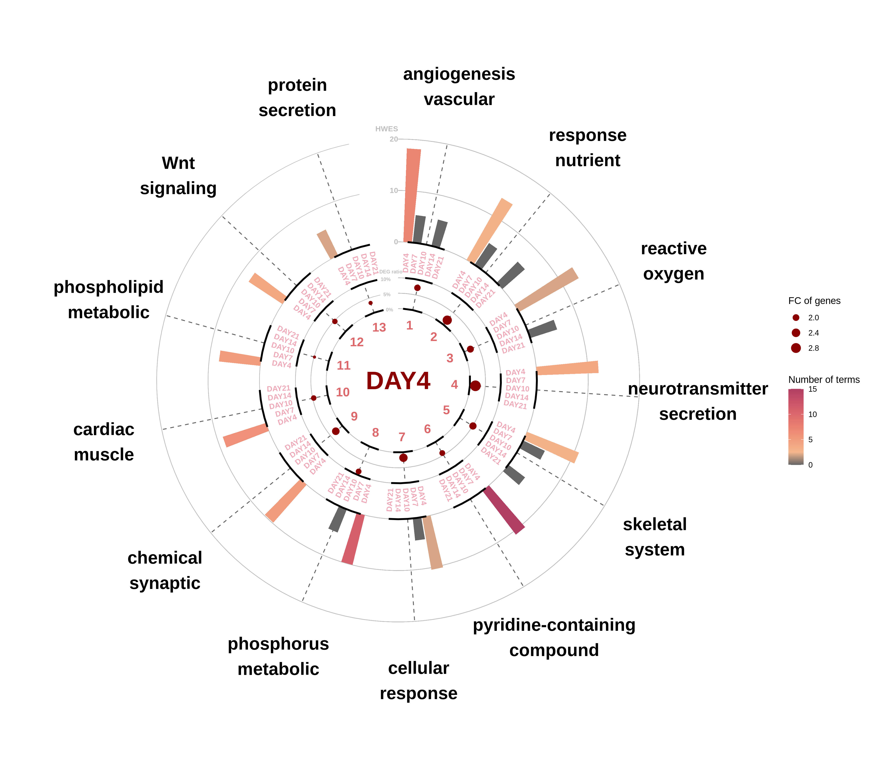
2.2. Term plot
HARMONIC_TERM_barPLOT_forMULTI() expands a selected tree
(via clusternum) into its individual GO terms for the
multiple-case design, showing each term’s Tscore and gene distribution
ratio.
-
status— which trees to show ("specific") -
condition— reference condition index -
clusternum— the tree number to expand (matches the tree plot)
HARMONIC_TERM_barPLOT_forMULTI(filepath = "../HARMONIC_DIFF/HARMONIC/",
DEG_list_name = "input_DEG_list.txt",
status = "specific",
trends = "UP",
LABEL = c("DAY4","DAY7","DAY10","DAY14","DAY21"),
condition = 1,
clusternum = 12,
width = 10,
height = 4)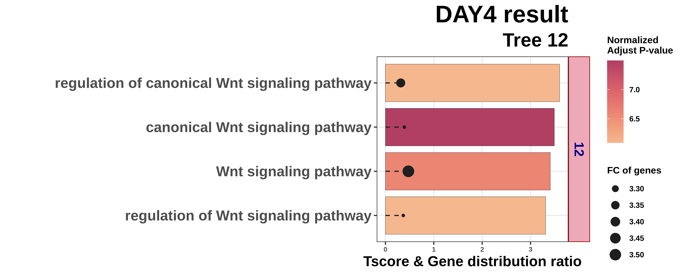
3. Common-case analysis
3.1. Tree plot
Setting status = "common" shows the active trees that
are shared across all conditions, complementing the
condition-specific view in section 2. The circular layout again stacks
the successive conditions as concentric rings.
HARMONIC_TREE_cirPLOT_forMULTI(filepath = "../HARMONIC_DIFF/HARMONIC/",
DEG_list_name = "input_DEG_list.txt",
status = "common",
trends = "UP",
LABEL = c("DAY4","DAY7","DAY10","DAY14","DAY21"),
project = "Differentiation",
condition = 1,
tree_size = 8,
label_size = 3,
project_size = 6,
width = 14,
height = 12)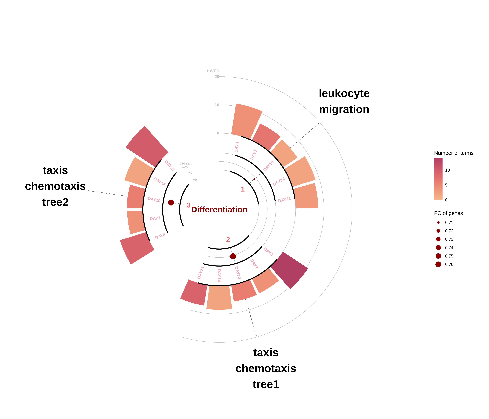
3.2. Term plot
For a common tree (here clusternum = 2), the term plot
can be drawn for each condition in turn (condition = 1
through 5, i.e. DAY4 → DAY21), letting you compare how the
same tree’s GO terms behave across the trajectory.
HARMONIC_TERM_barPLOT_forMULTI(filepath = "../HARMONIC_DIFF/HARMONIC/",
DEG_list_name = "input_DEG_list.txt",
status = "common",
trends = "UP",
LABEL = c("DAY4","DAY7","DAY10","DAY14","DAY21"),
condition = 1,
clusternum = 2,
width = 10,
height = 4)
}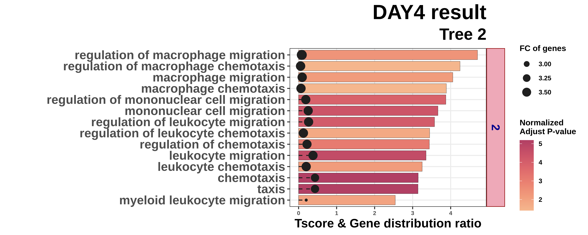
HARMONIC_TERM_barPLOT_forMULTI(filepath = "../HARMONIC_DIFF/HARMONIC/",
DEG_list_name = "input_DEG_list.txt",
status = "common",
trends = "UP",
LABEL = c("DAY4","DAY7","DAY10","DAY14","DAY21"),
condition = 2,
clusternum = 2,
width = 10,
height = 4)
}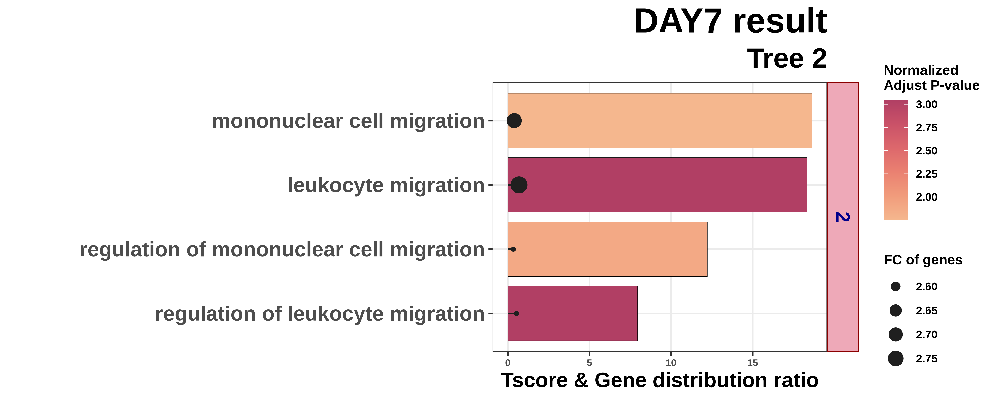
HARMONIC_TERM_barPLOT_forMULTI(filepath = "../HARMONIC_DIFF/HARMONIC/",
DEG_list_name = "input_DEG_list.txt",
status = "common",
trends = "UP",
LABEL = c("DAY4","DAY7","DAY10","DAY14","DAY21"),
condition = 3,
clusternum = 2,
width = 10,
height = 4)
}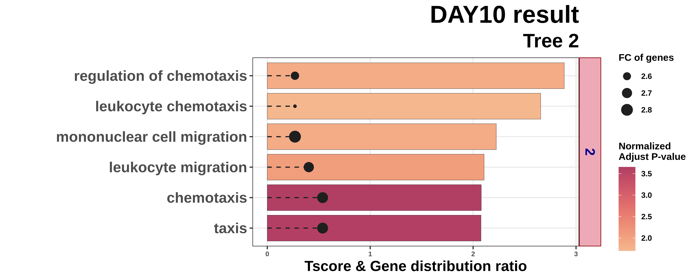
HARMONIC_TERM_barPLOT_forMULTI(filepath = "../HARMONIC_DIFF/HARMONIC/",
DEG_list_name = "input_DEG_list.txt",
status = "common",
trends = "UP",
LABEL = c("DAY4","DAY7","DAY10","DAY14","DAY21"),
condition = 4,
clusternum = 2,
width = 10,
height = 4)
}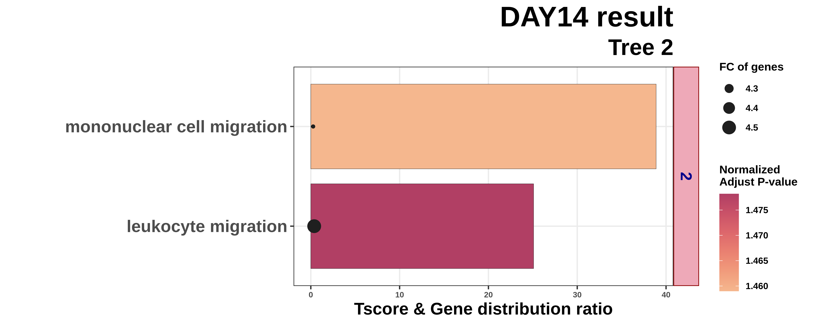
HARMONIC_TERM_barPLOT_forMULTI(filepath = "../HARMONIC_DIFF/HARMONIC/",
DEG_list_name = "input_DEG_list.txt",
status = "common",
trends = "UP",
LABEL = c("DAY4","DAY7","DAY10","DAY14","DAY21"),
condition = 5,
clusternum = 2,
width = 10,
height = 4)
}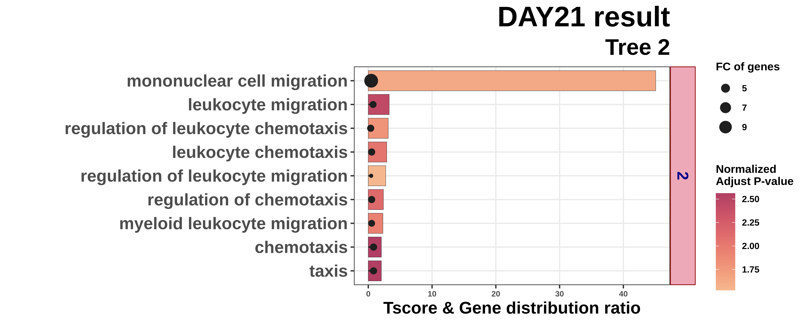